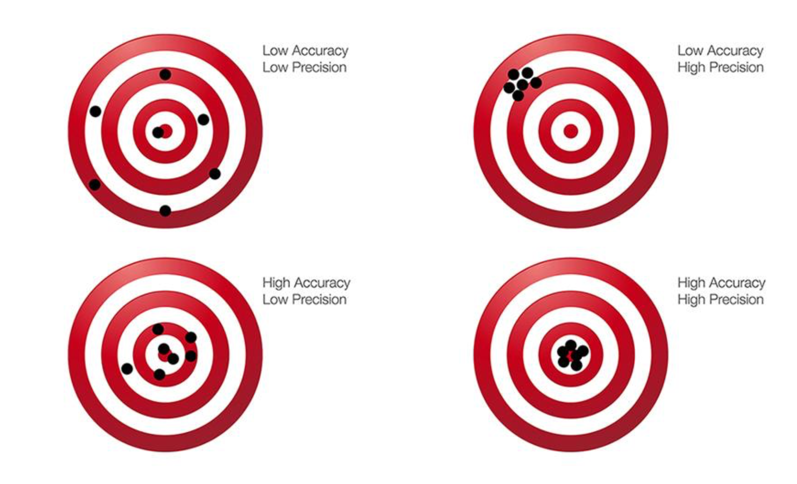
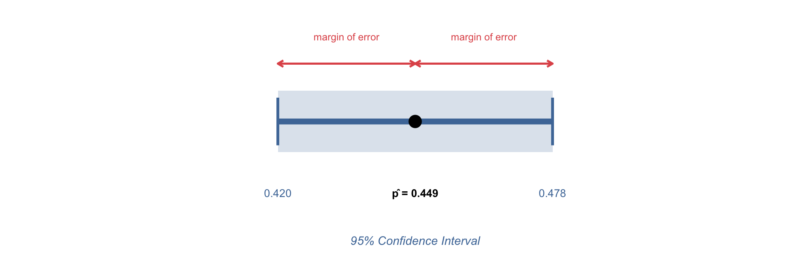
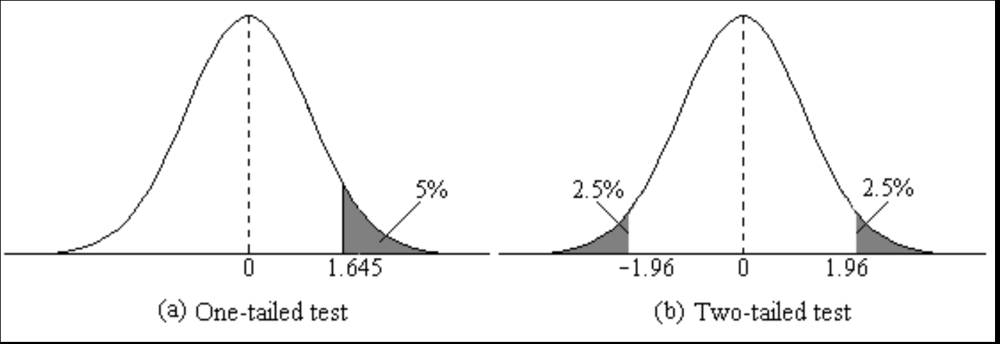
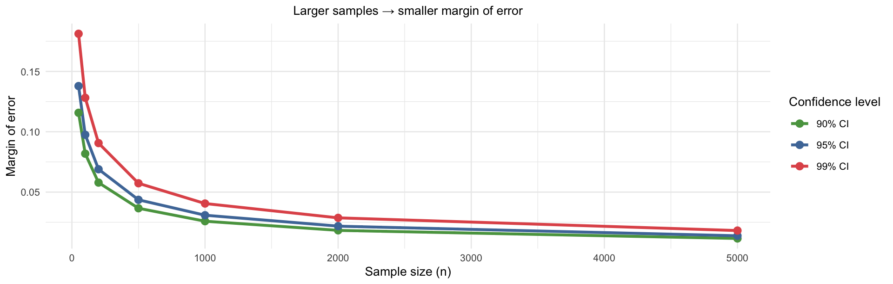
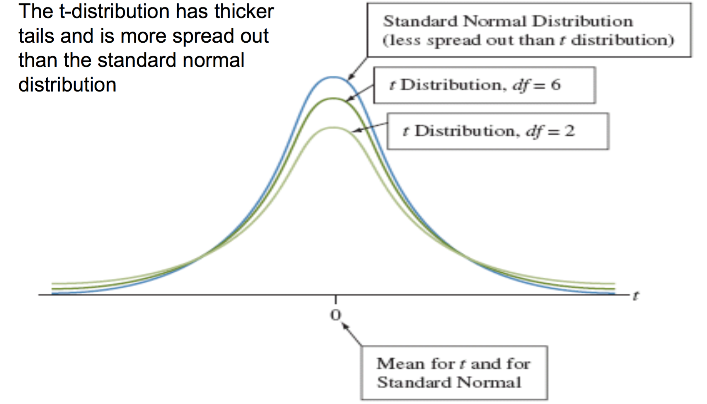
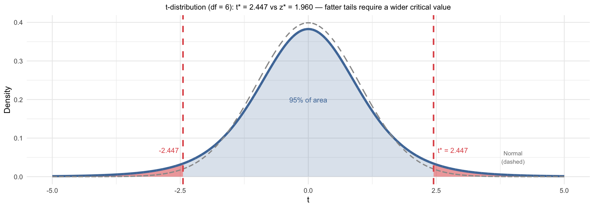
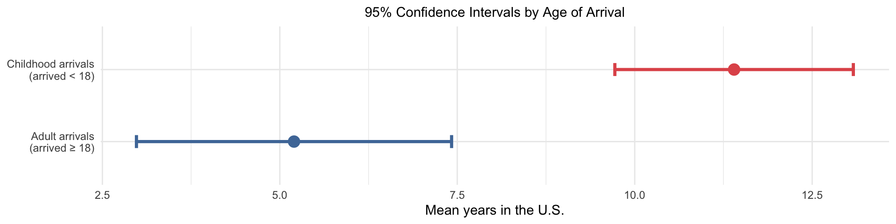

Sociology 106: Quantitative Sociological Methods
March 10, 2026
In-class lab:
Housekeeping:
Statistical content — three parts:
Annotated Bibliography: Due Thursday, March 19
Weekly Assignment #7
Week 14 lecture:
Homework #6:
pbinom(x) = P(X ≤ x) and includes x, you subtract 1 from the lower bound: pbinom(6) - pbinom(3) gives P(4 ≤ X ≤ 6) because pbinom(3) already includes 3, removing it from the range.Paper proposal:
Due March 19
Identify ten scholarly sources related to your research question
For each source: in two short paragraphs:
Here is a link to an example of one source: you will need 10.
“effect of independent variable on dependent variable”
May need to use a UC Berkeley Library proxy to access some academic articles. This is a helpful webpage for using the proxy server and here is a link to make a virtual appointment for research help.
cited by icon under the citationDon’t use AI for this:
AI will hallucinate citations more often than not, so don’t use it for this. Google Scholar is probably your best bet here!
| Section | What to look for |
|---|---|
| Abstract | Overview: research question, data, main result — read first |
| Introduction | Slightly more detailed than abstract; same format |
| Conclusion | Results, alternative explanations, limitations — and future research topics |
| Background / Lit review | Previous research; a good source of additional citations |
| Data section | How the sample was constructed; what data sources researchers use |
| Methods | Don’t worry about this too much yet! |
Order of operations:
Start with abstract → conclusion → introduction. Only go deeper if the paper is clearly relevant.
Using what we know about sampling distributions to make inferences
Main idea: Last week, we knew population parameters and built sampling distributions. Today we flip the problem: we use a single sample to make inferences about population parameters we cannot directly observe.
The chain of inference:
Week 7: Population → Sample → Statistic → Sampling distribution
Week 8: Sample → Statistic → Sampling distribution → Confidence interval → Inference
What we learned:
| Concept | Key idea | Philadelphia example |
|---|---|---|
| Sampling | A (approximately) random subset of a population | 262 police stops recorded |
| Sampling distributions | How a statistic varies across repeated samples | Distribution of \(\hat{p}\) if stops were random |
| CLT | For large \(n\), sample means are approximately Normal | Even skewed distributions → Normal sample mean |
The key from last week:
We could construct sampling distributions because we knew the population parameters (\(\pi = 0.422\), \(\mu\), \(\sigma\)). Today we drop that assumption — in the real world, we almost never know these.
Last week: Known population parameters → Build a sampling distribution
\[\text{If } \pi = 0.422 \text{ and } n = 262, \text{ then } \hat{p} \sim N\!\left(0.422,\, 0.030\right)\]
This week: Observed sample data → Estimate unknown population parameters
\[\text{We observe } \hat{p} = 0.449 \text{ from } n = 1154 \;\longrightarrow\; \text{what can we say about } \pi?\]
The fundamental shift:
We stop pretending we know the population. Instead, we use a sample statistic to construct a range of plausible values for the parameter — a confidence interval.
| Population | Sample | |
|---|---|---|
| Concept | The whole universe a study aspires to generalize to | The subset of the population we actually observe |
| Quantity | Parameter — a number describing the population (usually unknown) | Statistic — a number computed from the data |
| Notation | \(\mu\) (mean), \(\pi\) (proportion), \(\sigma\) (std dev) | \(\bar{x}\) (mean), \(\hat{p}\) (proportion), \(s\) (std dev) |
| Example | True proportion of Americans supporting env. protection: \(\pi = ?\) | GSS sample proportion: \(\hat{p} = 0.449\) |
The goal of statistical inference: use a sample statistic to learn about a population parameter
An estimator is a rule for making inferences about a population parameter using sample data. The value of an estimator is called an estimate.
A point estimator gives a single value as our best guess for the population parameter
| Sample statistic | Estimates | Population parameter |
|---|---|---|
| Sample mean \(\bar{x}\) | → | Population mean \(\mu\) |
| Sample proportion \(\hat{p}\) | → | Population proportion \(\pi\) |
| Sample std dev \(s\) | → | Population std dev \(\sigma\) |
| Regression coefficient \(\hat{\beta}\) | → | Population coefficient \(\beta\) |
(We’ll use \(\hat{\beta}\) in weeks 11–13 — but it works exactly the same way)
An interval estimator gives a range of values predicted to contain the parameter
Example: A 95% CI for \(\pi\) based on \(\hat{p} = 0.449\):
A point estimator has two important properties:
1. Bias: The difference between the expected value of the estimator and the population parameter
2. Efficiency: The sampling variability of the estimator

Remember: bias relates to accuracy, efficiency relates to precision
From point estimates to ranges of plausible values
To construct a confidence interval, we use the sampling distribution of the point estimator.
The logic:
The sampling distribution tells us how far a statistic is likely to fall from the true parameter. We reverse this: given where our statistic fell, how far is the true parameter likely to be?
Key ingredients:
\[\text{Confidence Interval} = \underbrace{\hat{p}}_{\text{point estimate}} \pm \underbrace{z^* \times SE(\hat{p})}_{\text{margin of error}}\]
The confidence level is the probability that a confidence interval contains the true population parameter
Common misconception:
It is tempting to say “there’s a 95% chance the true value is in this interval” — but this is wrong. The true parameter \(\pi\) is a fixed (unknown) number; it doesn’t have a probability of being anywhere. Rather, it is the interval itself that varies from sample to sample.
The correct interpretation: if we repeated this study 100 times and built a CI each time, 95 of those intervals would contain the true \(\pi\). Any single interval either contains it or doesn’t.
The margin of error is how far the CI extends in each direction from the point estimate:
\[\text{Margin of Error} = z^* \times SE(\hat{p})\]
\[\hat{p} \pm \underbrace{z^* \times SE(\hat{p})}_{\text{margin of error}} = \left[\hat{p} - z^* \cdot SE,\;\; \hat{p} + z^* \cdot SE\right]\]
| Piece | Meaning |
|---|---|
| \(\hat{p}\) | Point estimate — center of the interval |
| \(z^*\) | Critical value — from the standard Normal for our confidence level |
| \(SE(\hat{p})\) | Standard error — how uncertain is \(\hat{p}\)? |
| \(z^* \times SE\) | Margin of error — how wide is each side? |
The critical value \(z^*\) depends on the confidence level. These are the ones you’ll use most often:
| Confidence level | \(\alpha\) (= 1 − conf.) | \(\alpha/2\) (each tail) | \(z^*\) |
|---|---|---|---|
| 90% | 0.10 | 0.05 | 1.645 |
| 95% | 0.05 | 0.025 | 1.960 |
| 97% | 0.03 | 0.015 | 2.170 |
| 99% | 0.01 | 0.005 | 2.576 |
Why 1.96 for 95%?
A 95% CI leaves 5% outside the interval — split equally as 2.5% in each tail. The z-score that cuts off the upper 2.5% of the standard Normal is exactly 1.96.

The sample proportion \(\hat{p}\) is an unbiased estimator of the population proportion \(\pi\)
The exact standard error is \(\sqrt{\frac{\pi(1-\pi)}{n}}\) — but we don’t know \(\pi\), so we estimate it:
\[SE(\hat{p}) = \sqrt{\frac{\hat{p}(1-\hat{p})}{n}}\]
The 95% confidence interval formula:
\[\hat{p} \pm \underbrace{z^*}_{=\,1.96} \times SE(\hat{p}) = \hat{p} \pm 1.96 \times \sqrt{\frac{\hat{p}(1-\hat{p})}{n}}\]
Here \(z^* = 1.96\) is the critical value for a 95% confidence interval — the z-score that cuts off 2.5% in each tail of the standard Normal. (See the “Common \(z^*\) Values” tab from the previous slide for other levels.)
When can we use this?
We need at least 15 successes and 15 failures for the Normal approximation to be valid. For \(n = 1154, \hat{p} = 0.449\): we have 518 successes and 636 failures — both well above 15. ✓
A campus poll finds 74 of 120 students support extending library hours.
Calculate the 95% confidence interval for the true proportion of students in favor.
Step 1 — What is the sample proportion \(\hat{p}\)?
\[\hat{p} = \frac{74}{120} = 0.617\]
Step 2 — What is the standard error \(SE(\hat{p})\)?
\[SE(\hat{p}) = \sqrt{\frac{0.617 \times 0.383}{120}} = \sqrt{0.00197} = 0.044\]
Step 3 — What is the 95% CI? (\(z^* = 1.96\))
\[0.617 \pm 1.96 \times 0.044 = 0.617 \pm 0.086 = [0.531,\; 0.703]\]
Interpretation: We are 95% confident that between 53.1% and 70.3% of students support extending library hours.
Research Question: In 2000, the GSS asked adult Americans: “Are you willing to pay much higher prices in order to protect the environment?”
Goal: Estimate the 95% confidence interval for the proportion of adult Americans willing to pay higher prices to protect the environment (ignoring sample weights for now)
Step 1 — Sample proportion:
\[\hat{p} = \frac{518}{1154} = 0.449\]
Step 2 — Standard error:
\[SE(\hat{p}) = \sqrt{\frac{0.449 \times 0.551}{1154}} = 0.0146\]
Step 3 — 95% CI (\(z^* = 1.96\)):
\[0.449 \pm 1.96 \times 0.0146 = 0.449 \pm 0.029 = [0.420, 0.478]\]
Same steps, but with \(z^* = 2.576\) for 99% confidence:
Step 1 — Sample proportion:
\[\hat{p} = \frac{518}{1154} = 0.449\]
Step 2 — Standard error:
\[SE(\hat{p}) = \sqrt{\frac{0.449 \times 0.551}{1154}} = 0.0146\]
Step 3 — 99% CI (\(z^* = 2.576\)):
\[0.449 \pm 2.576 \times 0.0146 = 0.449 \pm 0.038 = [0.411, 0.487]\]
| 95% CI | 99% CI | |
|---|---|---|
| Critical value \(z^*\) | 1.96 | 2.576 |
| Margin of error | ±0.029 | ±0.038 |
| Interval | [0.420, 0.478] | [0.411, 0.487] |
| Width | 0.058 | 0.076 |
Notice: The 99% CI is wider — to be more confident our interval contains the true parameter, we must accept more uncertainty about exactly where it falls
Correct interpretation:
“We are 95% confident that between 42.0% and 47.8% of adult Americans were willing to pay higher prices to protect the environment in 2000.”
How to interpret:
A newspaper article reports:
“Our poll shows 45% of voters support Measure A, with a margin of error of ±3 percentage points. There is a 95% probability the true support is between 42% and 48%.”
What’s wrong with this statement? (Take 30 seconds, then turn to your neighbor)
The error:
The article treats the population proportion \(\pi\) as if it were a random variable with a 95% chance of landing in a range — but \(\pi\) is a fixed (unknown) number. It doesn’t have a probability of being anywhere. Rather, it is the interval that is random: if we repeated this poll many times, 95% of the resulting intervals would contain the true \(\pi\). This particular interval either does or doesn’t — we just don’t know which.
The correct statement: “We are 95% confident the true support is between 42% and 48%.”
To build a CI, we need \(z^*\) — the number of standard errors to extend in each direction so the interval captures the central X% of the Normal distribution. We find \(z^*\) using qnorm(), which returns the z-score that cuts off a given tail probability.
The logic: for a 95% CI, we want 2.5% in each tail → we ask for the z that satisfies \(P(Z > z) = 0.025\):
When we test for differences, we can test in one or both directions:
A one-tailed test checks for a significant effect in one specific direction (greater than or less than)
Example: Is the proportion of Americans willing to pay for the environment greater than 40%?
A two-tailed test looks for any significant difference in either direction
Example: Is the proportion of Americans willing to pay for the environment different from 40%?

As confidence level increases → margin of error increases
| Confidence level | \(z^*\) | Margin of error (GSS example) |
|---|---|---|
| 90% | 1.645 | ±0.024 |
| 95% | 1.960 | ±0.029 |
| 99% | 2.576 | ±0.038 |
As sample size increases → margin of error decreases
\[ME = z^* \times \sqrt{\frac{\hat{p}(1-\hat{p})}{n}} \quad \longrightarrow \quad \text{larger } n \Rightarrow \text{ smaller } ME\]
| Sample size \(n\) | SE | Margin of error (95%) |
|---|---|---|
| 100 | 0.050 | ±0.098 |
| 500 | 0.022 | ±0.044 |
| 1154 | 0.015 | ±0.029 |
Quadrupling the sample size halves the margin of error

When we don’t know the population standard deviation
The same logic applies — but there’s a complication
For proportions: \(SE(\hat{p}) = \sqrt{\hat{p}(1-\hat{p})/n}\) — we only need \(\hat{p}\) (which we have)
For means: the true SE is \(\sigma/\sqrt{n}\) — but we don’t know \(\sigma\)!
Solution: Estimate \(\sigma\) with the sample standard deviation \(s\):
\[SE(\bar{x}) = \frac{s}{\sqrt{n}}\]
\[s = \sqrt{\frac{1}{n-1}\sum_{i=1}^{n}(x_i - \bar{x})^2}\]
Problem: Using \(s\) instead of \(\sigma\) introduces extra uncertainty — especially in small samples
Solution: Replace \(z^*\) with a slightly larger \(t^*\) critical value from the t-distribution
The t-distribution is:
Key properties:
Consequence for CIs:

When the population standard deviation is unknown:
\[\bar{x} \pm t^* \times \frac{s}{\sqrt{n}}\]
where \(t^*\) comes from the t-distribution with \(df = n - 1\)
Finding \(t^*\) in R:
Study: 7 American adults from a simple random sample. Average height: 67.2 in, SD: 3.9 in. What is the 95% CI for the average height of all American adults?
Identify the values:
| Quantity | Value |
|---|---|
| Sample mean \(\bar{x}\) | 67.2 inches |
| Sample std dev \(s\) | 3.9 inches |
| Sample size \(n\) | 7 |
| Degrees of freedom | \(df = n - 1 = 6\) |
Find the critical t-value for a 95% CI with \(df = 6\):
Compare to \(z^* = 1.960\) — noticeably larger with a small sample. This is why we use the t-distribution: with only 7 observations, we need a wider interval to achieve true 95% coverage.
Calculate the standard error:
\[SE(\bar{x}) = \frac{s}{\sqrt{n}} = \frac{3.9}{\sqrt{7}} = \frac{3.9}{2.646} = 1.474 \text{ inches}\]
Compute and interpret the confidence interval:
\[\bar{x} \pm t^* \times SE = 67.2 \pm 2.447 \times 1.474 = 67.2 \pm 3.6 = [63.6,\; 70.8]\]
Interpretation: We are 95% confident the average height of all American adults is between 63.6 and 70.8 inches

z and tFor this small sample (\(n = 7\), \(df = 6\)):
| Distribution | Critical value | 95% CI | Width |
|---|---|---|---|
| t (correct) | \(t^* = 2.447\) | [63.6, 70.8] | 7.2 in |
| z (incorrect for small \(n\)) | \(z^* = 1.960\) | [64.3, 70.1] | 5.8 in |
The z-based interval is too narrow — it would not achieve true 95% coverage. The difference shrinks as \(n\) grows.
Rule of thumb:
When \(n > 100\), \(t^* \approx z^*\) and the distinction rarely matters in practice.
z vs tThe decision starts with what you’re estimating:
| Estimating a proportion | Estimating a mean | |
|---|---|---|
| Use | z-distribution | t-distribution |
| Why | SE only depends on \(\hat{p}\) — no unknown \(\sigma\) to estimate | We estimate \(\sigma\) with \(s\), adding uncertainty the t accounts for |
| Formula | \(\hat{p} \pm z^* \sqrt{\hat{p}(1-\hat{p})/n}\) | \(\bar{x} \pm t^* (s/\sqrt{n})\) |
| Critical value | qnorm() |
qt(df = n - 1) |
Practical caveat — sample size:
When \(n > 100\), \(t^* \approx z^*\) and the distinction rarely matters. But for means, always use qt() — it automatically converges to the Normal for large \(n\).
Finding critical values in R:
[1] 1.959964[1] 2.446912[1] 1.984217The same CI logic applies separately to subgroups — useful when your research question involves comparing populations:
Calculate a CI for each group independently, then compare:
Preview of Week 9:
This is an informal first look at hypothesis testing. Next week we’ll formalize exactly how far apart two groups need to be before we conclude the difference is real.
Do childhood and adult arrivals differ in years spent in the U.S.?
| Group | \(n\) | \(\bar{x}\) | \(s\) | 95% CI |
|---|---|---|---|---|
| Childhood arrivals (arrived < 18) | 20 | 11.4 | 3.6 | [9.7, 13.1] |
| Adult arrivals (arrived ≥ 18) | 15 | 5.2 | 4.0 | [3.0, 7.4] |
The intervals do not overlap → childhood arrivals have spent meaningfully more time in the U.S.

Key takeaway:
Confidence intervals quantify what we know and what we don’t know. A wide interval means we’re uncertain; a narrow interval means our sample was large enough to pin down the parameter closely.
Key takeaway:
The tools we built today — standard errors, critical values, confidence intervals — are not just Week 8 material. They are the backbone of every inferential result we’ll encounter for the rest of the course.
Weekly Assignment #7
Annotated Bibliography